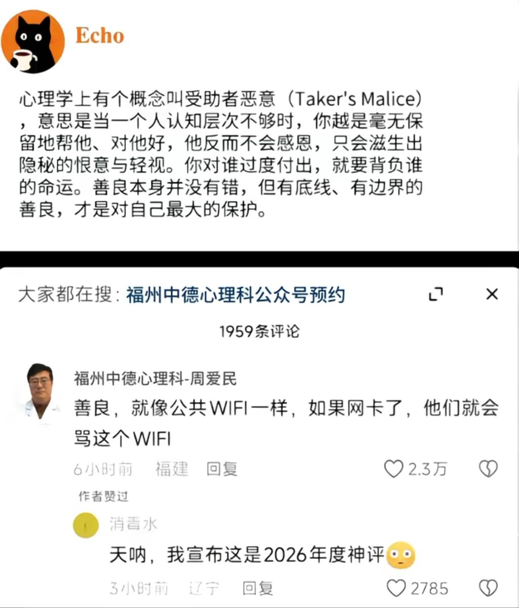

对别人伸出援手是很严肃的事情，你把他拉出来，他可能感谢你，如果他陷得太深了，没有力气行动，想要站起来，也不想使力起来，你使劲拽住他的手，拉不出来，他只会埋怨你没有力气，因为你力气太小了，所以我才站不起来，把自己的一切失败推到帮助他的人身上，这种人真的很悲哀他们只会把幸福给推走


千早很认同这个观点，之前有个孩子拜托我监督他让我用一些方法帮助他进行改变，结果自己三分钟热度，我去监督他去做，他又开始埋怨我，不监督他去做，几天后又抱怨我没有责任心，直到最后不管他做不做，都是我的原因，我造成的然后关系破裂，你对别人越好，他越会把自己的原因推到你身上，真是可惜…… https://t.co/NvIoL9V1sB